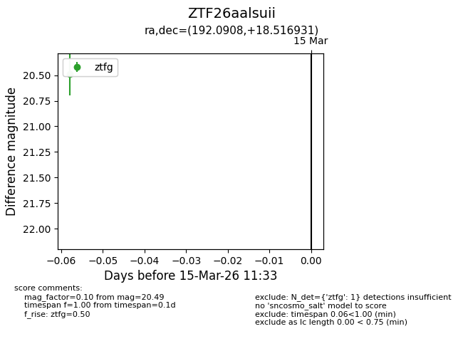
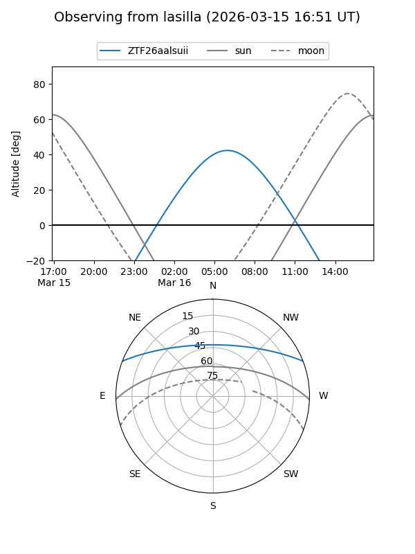
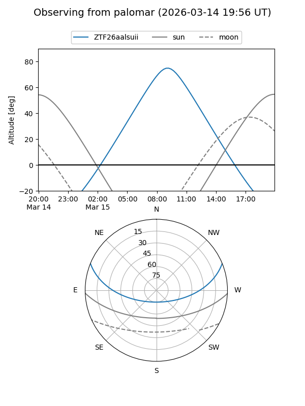

ZTF26aalsuii
Target ZTF26aalsuii at 2026-03-15 11:35
Aliases and brokers:
FINK: link
Lasair: link
ALeRCE: link
alt names
ZTF26aalsuii (ztf,fink_ztf)
Coordinates:
equatorial (ra, dec) = 192.0908,+18.51693
equatorial (HMS+DMS) = 12:48:21.79,+18:31:00.95
galactic (l, b) = (298.0746,+81.35967)
Flags:
Photometry:
last ztfg=20.49
1 ztfg detections
Lightcurve

Visibility


Additional plots